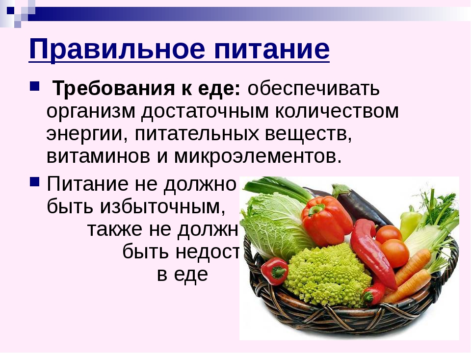

Самые полезные продукты питания (по версии журнала FOCUS)Очень часто в различных изданиях публикуются списки самых полезных продуктов питания, потребляя которые человек может избавиться или избежать проблем со здоровьем, быть всегда в форме и получать все нужные организму вещества. Однако не смотря на то, что многие диетологи и другие специалистов в области питания могли бы серьезно и небезосновательно раскритиковать любой из них, все же определенная доля истины в них присутствует. В подобных списках всегда описываются лишь свежие и натуральные продукты, что уже не плохо. Принять во внимание и сделать некоторые выводы для себя можно, однако человеку - как существу всеядному необходимо разнообразие в питании и чем оно разнообразнее, тем лучше. Многочисленные списки полезных продуктов дают возможность включить в свое меню как можно больше полезных продуктов, но питаться лишь тем, что есть в каком-либо из списков не следует.
Так, например, в список полезных продуктов питания, опубликованный газетой The Daily Mirror, вошли: коричневый рис, куриные яйца, молоко, шпинат, бананы, курятина, лососина, черника, травы и чеснок.
Рассмотрим более подробно список продуктов питания, представленный в немецком журнале Focus. Который был составлен и подобран исходя из мнения немецких ученых о пользе тех или иных продуктов для здоровья человека.
Яблоки Съедающие по яблоку в день имеют меньше шансов заболеть болезнью Альцгеймера.
Вещества, содержащиеся в яблоках, в частности кверцетин, способны тормозить развитие раковых клеток. Кроме того, кверцетин обладает противовоспалительным действием и уменьшает вред так называемых свободных радикалов. Яблоки содержат также витамины и микроэлементы, повышающие иммунитет и улучшающие работу сердечно-сосудистой системы
Кто заботится о своем сердце, должен есть больше рыбы вместо мяса. Три "рыбных" обеда в неделю или 30 грамм рыбы в день уменьшают риск возникновения инфаркта на 50%. Происходит это благодаря содержанию в рыбе жирных кислот Омега-3, благоприятно действующих на клеточные мембраны.
И действительно, статистика показывает, что японцы и эскимосы, регулярно употребляющие рыбу, намного реже страдают от сердечно-сосудистых заболеваний, чем народы, чей рацион беден рыбными продуктами.
ЧеснокЧеснок незаменим при лечении простудных заболеваний. Кроме того, его употребление снижает риск возникновения рака желудка и кишечника и улучшает работу пищеварения.
Одно из важных свойств чеснока – он защищает от риска сосудистых заболеваний, а вещества, содержащиеся в нем, хорошо прочищают сосуды и препятствуют их закупориванию.
КлубникаОказывается, для снабжения организма витамином C не обязательно делать над собой усилие, поедая кислые лимоны: в клубнике содержится больше этого витамина. Хороша клубника не только этим – высокое содержание железа повышает иммунитет организма.
Некоторые красящие вещества и эфирные масла, которыми богата эта ягода, способны сдерживать образование особых энзимов, провоцирующих развитие рака.
МорковьСодержащийся в моркови бета-каротин нейтрализует свободные радикалы, разрушающие генную структуру и провоцирующие рак. Кроме того, он благоприятно воздействует на состояние кожи и зрения.
Однако необходимо помнить, что бета-каротин лучше растворяется в жирах, поэтому к салату из моркови нужно обязательно добавлять масло или сметану.
ПерецОстрый перчик чили улучшает обмен веществ, способствуя тем самым похуданию. Капсацин, обуславливающий острый вкус перца, способствует выработке желудочного сока и препятствует размножению вредных бактерий в желудке и кишечнике.
Сладкий перец тоже полезен. Он содержит не только витамин C, но и красящее вещество лютеолин. Даже в малых дозах лютеолин сдерживает развитие рака, предохраняет от сердечно-сосудистых заболеваний и возрастных проблем.
БананыБананы – самый сытный и богатый углеводами фрукт. В бананах содержатся и различные балластные вещества, препятствующие быстрому поступлению сахара в кровь. А количество содержащегося в одном банане магния составляет одну шестую часть от суточной потребности организма.
Зеленый чайЧудодейственные свойства зеленого чая обусловлены содержанием катехина. Это биоактивное вещество препятствует развитию атеросклероза и предохраняет от заболевания раком простаты.
И для похудания зеленый чай очень хорош, только для сжигания жиров необходимо выпивать ежедневно не менее четырех чашек этого напитка. В черном чае катехин не содержится, так как разрушается в процессе его изготовления.
СояСоя содержит много лецитина и витаминов группы B, которые усиливают мыслительные способности и укрепляют нервную систему. Известна соя и как незаменимый источник белка, способного заменить животные белки.
Хотя соя и является непривычным для европейцев продуктом, последние исследования подтверждают ее полезность. Особенно это касается проростков сои.
МолокоМолоко не зря относят к основным продуктам питания. В нем содержатся ценные белки, легко перевариваемые жиры и полезный сахар лактоза. Богато молоко и кальцием.
Ученые установили, что запасы кальция, накопленные с молодости, помогают в старости избежать остеопороза. Необходим кальций и для функционирования нервной системы, и для правильной работы мускульной системы организма
Вишневый сокНекоторые натуральные продукты можно использовать как лекарство. Например, справиться с мышечной болью после физических нагрузок поможет вишневый сок, полагают американские ученые из университета Вермонта. Рекомендуемая лечебная доза – стакан сока вишни или 45 ягод.